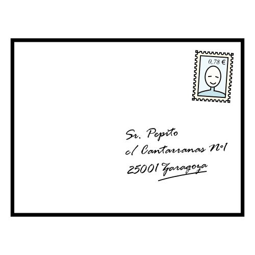
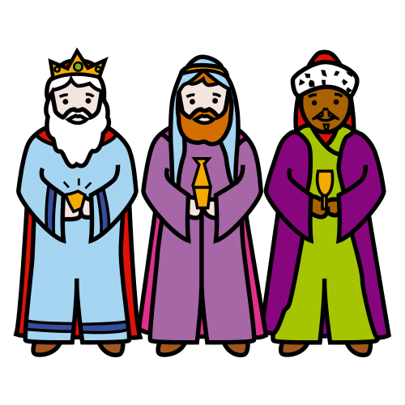
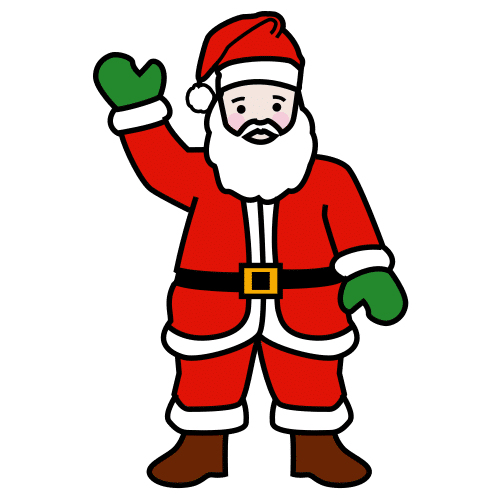
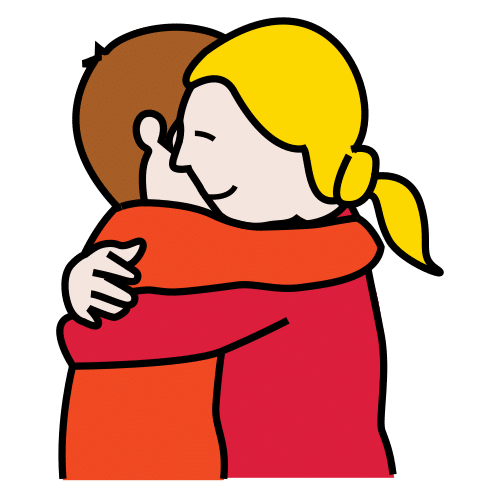

Plantilla · Escritura y comunicación
Carta
de deseos
Para decir qué deseo escribiendo, dibujando o pegando pictogramas. Con versiones para los Reyes Magos y Papá Noel.
Pictogramas: Sergio Palao. ARASAAC (Gobierno de Aragón). CC BY-NC-SA.
Licencia CC BY-NC-SA 4.0
ideducando.es
Antes de empezar
De un vistazo
Cada peque puede decir qué desea a su manera, también quien todavía no escribe o se comunica con un tablero. Hay tres
niveles y tres versiones de la carta. El nivel y la versión los elegís con cada peque y con su familia.
| Nivel |
 Mi carta de deseos |
 Reyes Magos |
 Papá Noel |
La versión «Mi carta de deseos» sirve para todas las familias, crean lo que crean: cada peque decide
para quién es. Las de los Reyes Magos y Papá Noel son opcionales. Pregunta antes a las familias con la nota de la
página .
Guía para el docente
Carta de deseos: cómo usarla
En diciembre, muchas familias escriben una carta de deseos. Con estas plantillas, cada peque dice qué desea a su
manera. También quien todavía no escribe o se comunica con un tablero, un comunicador o pictogramas.
Un derecho de cada peque
La Convención sobre los Derechos del Niño reconoce su libertad de expresión, «ya sea oralmente, por escrito o
impresas, en forma artística o por cualquier otro medio elegido por el niño» (art. 13). La Convención sobre los
derechos de las personas con discapacidad añade el derecho a «recibir asistencia apropiada» para expresar su opinión
(art. 7) y pide aceptar los «formatos aumentativos y alternativos de comunicación» (art. 21).
Tres niveles, la misma carta
- 1Con pictogramas. Frases con pictogramas, como en un tablero: «quiero jugar con…». Pega o señala.
- 2Frases para completar. Pega o dibuja su deseo y escribe una palabra, o la copia.
- 3Con mis palabras. Escribe la carta, con el principio de algunas frases.
El nivel describe la tarea, nunca al niño o la niña. CAST, el centro de investigación que publica las pautas del
Diseño Universal para el Aprendizaje (DUA), propone «Comunicar de diversas maneras que todos los modos de expresión
alineados con la meta son igualmente valiosos» (consideración 5.4): una carta con pictogramas vale lo mismo que una
escrita.
Cómo acompañar
-
Habla y señala a la vez. «¿Con quién quieres jugar?», y señala los pictogramas mientras lo dices.
Con quien usa comunicación aumentativa, que el adulto use sus símbolos al hablar le ayuda a avanzar en el lenguaje
(Sennott, Light y McNaughton, 2016).
-
Te proponemos ofrecer pocas opciones a la vez, de dos a cuatro, esperar sin prisa y aceptar
cualquier forma de elegir: señalar con el dedo o con la mirada, tocar o decir.
-
Su letra vale. En Infantil, el currículo de la Región de Murcia incluye la «Aproximación al código
escrito desde las escrituras indeterminadas» (Decreto 196/2022, pág. 33109). No corrijas la carta.
- Si lo dicta o lo señala, escribe tú debajo sus palabras, sin cambiarlas.
- Si usa su propio tablero o fotos, usa sus símbolos en lugar de estos.
Con cuidado
-
Sin comparar. En clase no se comparan cartas ni se habla de qué regalos llegarán: no todas las
familias pueden o quieren hacer regalos. Por eso hay tantos deseos que no se compran.
-
Todas las familias. Si falta alguien importante para ese peque, dibujadlo en una casilla en blanco.
El currículo de Infantil cuenta «La diversidad familiar» entre sus saberes (pág. 33084).
- La carta es suya. Se la lleva a casa y no se publica en redes ni en la web del cole.
El DUA en esta carta, según CAST (versión 3.0, 2024)
- 5.1 Usar múltiples medios para la comunicación: escribir, dibujar o pegar pictogramas.
- 5.4 Abordar sesgos relacionados con los modos de expresión y comunicación: todas las cartas valen igual.
- 7.1 Optimizar la elección y la autonomía: cada peque elige sus deseos y para quién es la carta.
- 8.2 Optimizar los desafíos y el apoyo: tres niveles con la misma carta.
Para las familias
Una carta de deseos
En clase vamos a hacer una carta de deseos. Cada peque la hace a su manera: escribiendo, dibujando o pegando
pictogramas.

Deseos que no se compran
Jugar con alguien, ir a un sitio, aprender algo nuevo o desear algo bueno para la familia. También puede pedir cosas,
si quiere.
¿Para quién es la carta?
Hay una carta para todas las familias, «Mi carta de deseos». Cada peque decide para quién es. Si en casa celebráis los
Reyes Magos o Papá Noel, decídnoslo y usará esa versión.
 En casa podéis
En casa podéis
Preguntar qué ha deseado y por qué. Si usa pictogramas o un tablero, dejad que os lo enseñe. Cualquier forma de
decirlo vale.
 La carta se va a casa
La carta se va a casa
Es suya. No la publicamos en ningún sitio.
Para el cole
Marcad la carta que preferís:
- Mi carta de deseos
- Carta a los Reyes Magos
- Carta a Papá Noel
- Prefiero hablarlo con la maestra o el maestro
Nombre:
Carta de deseos con pictogramas. IdEducando, noviembre de 2026. Licencia CC BY-NC-SA 4.0. Los
símbolos pictográficos utilizados son propiedad del Gobierno de Aragón y han sido creados por Sergio Palao para
ARASAAC (https://arasaac.org), que los distribuye bajo Licencia Creative Commons BY-NC-SA.
Fuentes y créditos
De dónde sale este material
Carta de deseos con pictogramas. Equipo IdEducando, noviembre de 2026.
ideducando.es/material-gratuito/carta-de-deseos. Fuentes consultadas el 8 de noviembre de
2026. Las plantillas y los niveles son una propuesta de IdEducando.
Derechos
-
Instrumento de Ratificación de la Convención sobre los Derechos del Niño, adoptada por la Asamblea General de las
Naciones Unidas el 20 de noviembre de 1989. BOE núm. 313, de 31 de diciembre de 1990, artículos 13 y 14.
-
Instrumento de Ratificación de la Convención sobre los derechos de las personas con discapacidad, hecho en Nueva York
el 13 de diciembre de 2006. BOE núm. 96, de 21 de abril de 2008, artículos 2, 7 y 21.
Comunicación aumentativa y Diseño Universal para el Aprendizaje
-
Sennott, S. C., Light, J. C. y McNaughton, D. (2016). AAC modeling intervention research review. Research and
Practice for Persons with Severe Disabilities, 41(2), 101-115. https://doi.org/10.1177/1540796916638822
-
CAST (2024). Directrices del Diseño Universal para el Aprendizaje, versión 3.0: consideraciones 5.1, 5.4,
7.1 y 8.2. udlguidelines.cast.org/es
Currículo
-
Decreto n.º 196/2022, de 3 de noviembre, por el que se establece el currículo de la etapa de Educación Infantil en la
Comunidad Autónoma de la Región de Murcia. BORM n.º 255, de 4 de noviembre de 2022, págs. 33084, 33100 y 33109.
Pictogramas, dibujos y licencia
Los pictogramas son de ARASAAC, el Centro Aragonés para la Comunicación Aumentativa y Alternativa. Su licencia pide
citar este texto: «Los símbolos pictográficos utilizados son propiedad del Gobierno de Aragón y han sido creados por
Sergio Palao para ARASAAC (https://arasaac.org), que los distribuye bajo Licencia Creative Commons BY-NC-SA». Las
coronas, el gorro, las estrellas, los copos y el sobre son dibujos de IdEducando.
Como todo lo que lleva pictogramas de ARASAAC, este material es gratis y lo será siempre. Licencia CC BY-NC-SA 4.0:
puedes copiarlo y adaptarlo citando a IdEducando, sin fines comerciales y con la misma licencia.